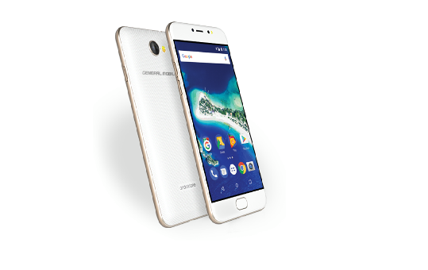

General Mobile GM 6 ön inceleme teknik özellikleri
Boyutlar: 144 x 71.3 x 8.6 mm 155 gram
Ekran: 5 inç 720p HD IPS
Ýþlemci: MediaTek MT6737T
GPU: Mali-T720 MP2
RAM: 3 GB RAM
Depolama: 32 GB + microSD kart desteði
Kamera: 13 MP arka + 8 MP ön
Ýþletim sistemi: Android 7.0 Nougat
Batarya: 3000 mAh